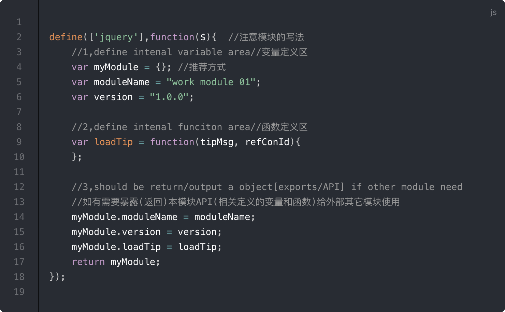

快来“前端
工程化
实践”寻找答案！- * 什么叫做前端工程化？
- * 鸿蒙时期
- * 模块管理时期
- * 编译构建时期
- * 未来畅想
网络定义：使用软件工程的技术和方法来进行前端项目的开发、维护和管理前端代码。
太抽象了！
所以什么是 工程 化？
砌 小灶 需要工程化吗？
建 摩天大楼 需要工程化吗？
把 复杂问题变简单的一种方法, 然而前端开发 到底 复杂 在哪里呢？
唯一能让人 深刻 的是 历史
发展阶段1
鸿蒙 时期！
时间：很久以前-2011.11.19(requirjs v1.0)
前端 逻辑 非常 简单 只能 寄人篱下*！
浏览器大战导致的兼容性问题

鸿蒙 时期
* java jsp模板代码鸿蒙 时期
* java velocity模板代码鸿蒙 时期
* php模板代码鸿蒙 时期
* ruby on rails模板代码
发展阶段2
模块管理时期！
时间：2011.11.19-2014.01.17(gulp v3.4)
代码量 大 依赖 复杂 难以 维护*！
* requirejs模块化代码

模块管理 时期
* seajs模块化代码模块管理 时期
* commonjs模块化代码发展阶段3
编译构建时期！


时间：2014.01.17(gulp v3.4)-现在
移动端占 主导地位 ，前端功能 日益复杂
性能要求 大大提高*！
* gulp工作流程
gulp 特点
* 封装文件流的输入输出，统一内部插件的通信规范，将具体代码的转换处理交由各个插件负责。同时借用了unix的管道思想来实现插件间通信，提高处理效率。部分常用 gulp插件
* gulp-connect：用于创建静态资源服务器，供调试使用。
* gulp-html-replace：用于想html中插入指定的资源，如css、js等
* gulp-uglify：用于代码混淆和压缩
* gulp-jest：用于单元测试。
* gulp-browserify：用于将commonjs依赖规范工程转换为浏览器可运行代码。
* gulp-umd：用于模块导出，如果有指定的全局对象，则绑定在全局对象下。